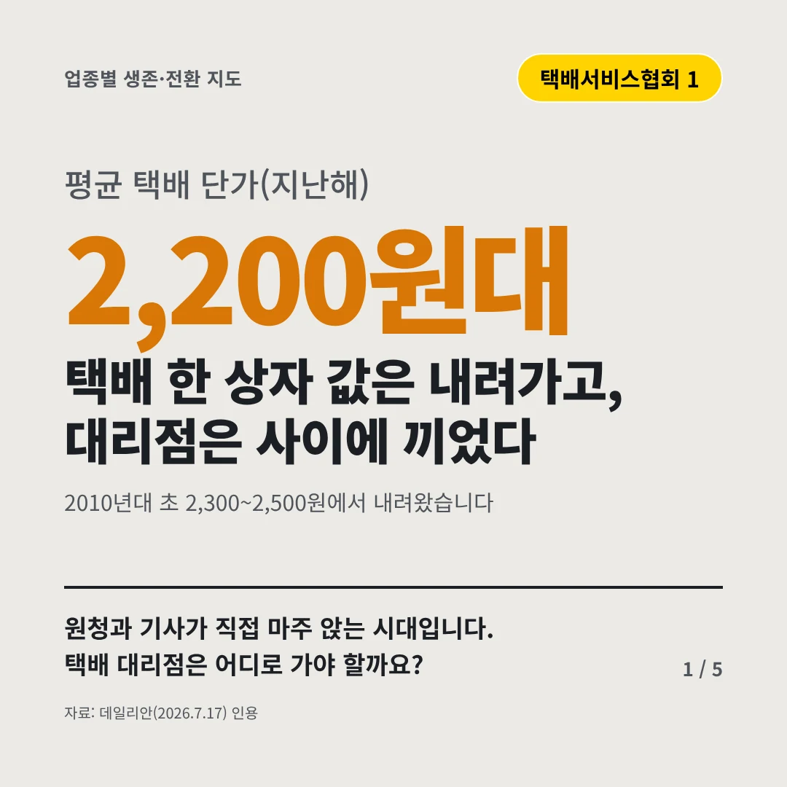
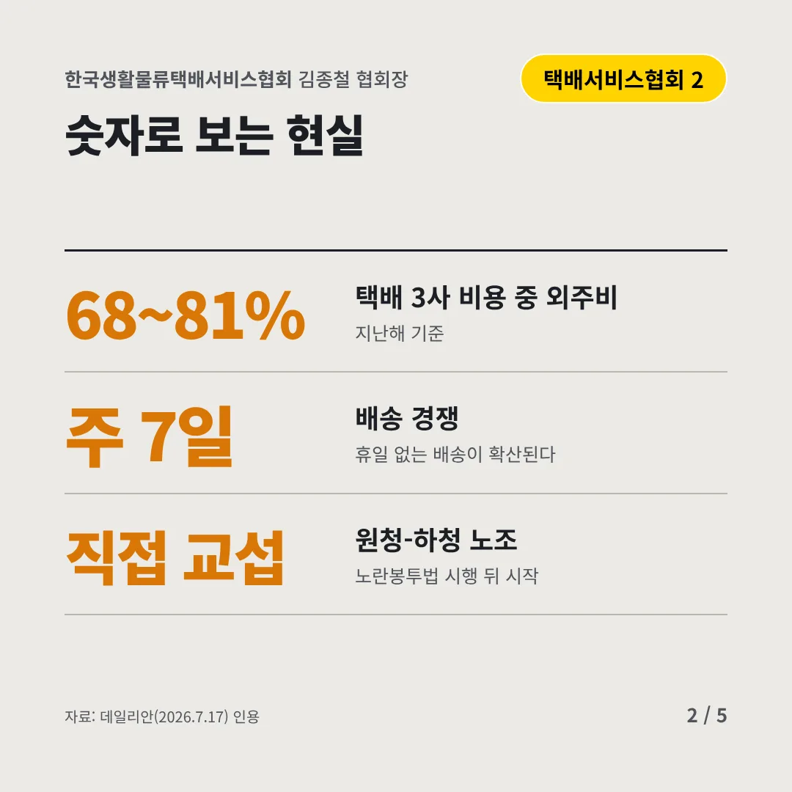
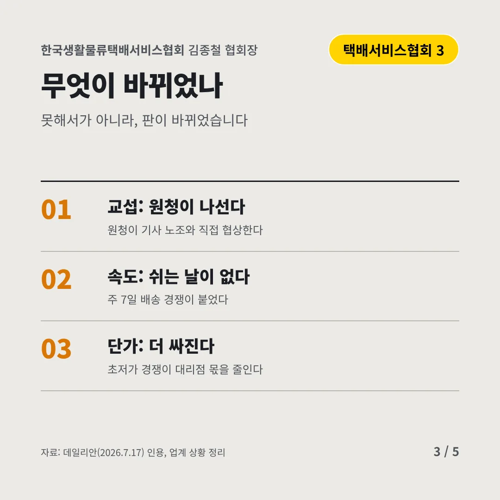
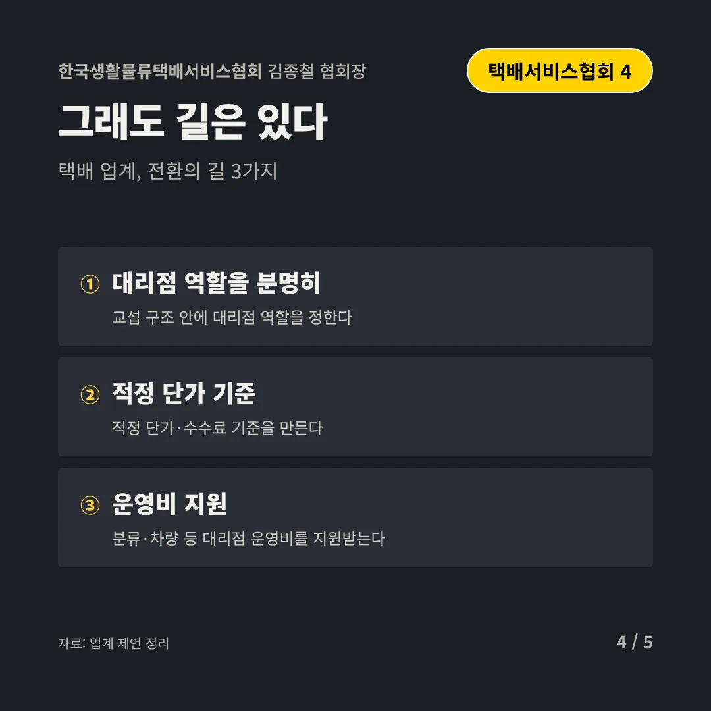
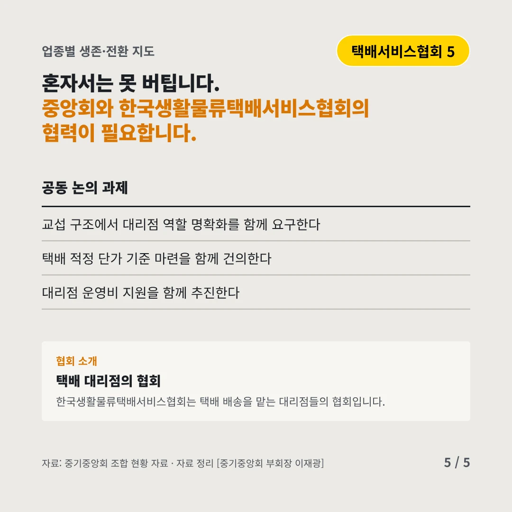
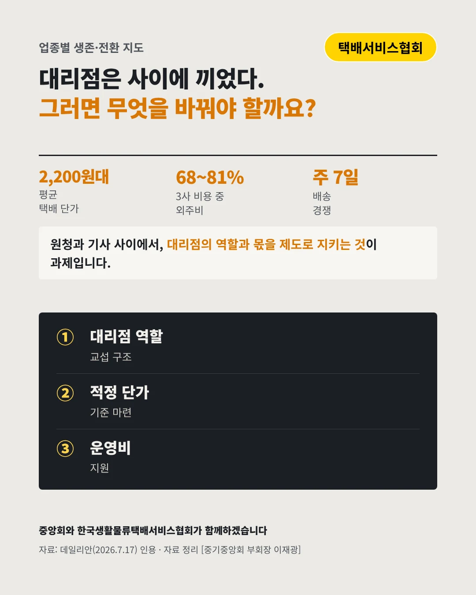

한국생활물류택배서비스협회
택배 한 상자 값은 내려가고, 대리점은 사이에 끼었다
2,200원대 평균 택배 단가(지난해)






원청과 기사가 직접 마주 앉는 시대입니다. 택배 대리점은 어디로 가야 할까요?
숫자로 보는 현실
- 68~81%택배 3사 비용 중 외주비지난해 기준
- 주 7일배송 경쟁휴일 없는 배송이 확산된다
- 직접 교섭원청-하청 노조노란봉투법 시행 뒤 시작
무엇이 바뀌었나
- 교섭: 원청이 나선다원청이 기사 노조와 직접 협상한다
- 속도: 쉬는 날이 없다주 7일 배송 경쟁이 붙었다
- 단가: 더 싸진다초저가 경쟁이 대리점 몫을 줄인다
그래도 길은 있다
- 대리점 역할을 분명히교섭 구조 안에 대리점 역할을 정한다
- 적정 단가 기준적정 단가·수수료 기준을 만든다
- 운영비 지원분류·차량 등 대리점 운영비를 지원받는다
한 장 요약

협회 소개
한국생활물류택배서비스협회는 택배 배송을 맡는 대리점들의 협회입니다.
자료: 데일리안(2026.7.17)